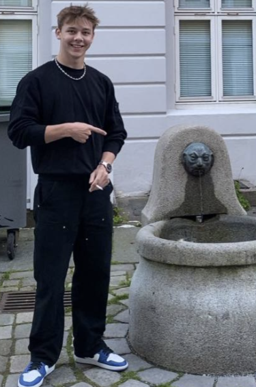

Bar
Bartender ved Heidi's i Bergen. Travle kveldar der ein må halde hovudet kaldt og hugse mange ting på ein gong.

Om meg
Student i informasjonsteknologi ved HVL Bergen, oppvaksen på Flatraket. Bartender på kveldstid og frisør på si.
Kort fortalt
Kven er eg?
Eg heiter Kristian Steenslid Hopland, er 21 år og bur i Bergen. Eg kjem frå Flatraket, og flytta til Bergen i håp om å oppfylle draumar. I prosjektet Bolig i Bergen A/S har eg rolla som grublar — eg er den som gjerne stiller eitt spørsmål til før vi bestemmer oss.
Før eg begynte å studere har eg studert, arbeidd og forstått mange delar av livet, men det er alltid meir å forstå. Erfaringa mi er breiare enn ho er djup: eg har vore på byggjeplass, jobba med sikkerheit, stått på bensinstasjon, vore lærling på ei IT-avdeling og arbeidd som bartender.
No er eg bartender ved Heidi's i Bergen, og eg har min eigen vesle frisørsalong som begynner å gå betre. Eg synest eg lærer best av praktiske utfordringar under press. Det er noko med å måtte løyse ting der og då, med folk som ventar, som gjer at ein hugsar det etterpå.
Bakgrunn
Eg har erfaring frå byggjeplass, sikkerheit, bensinstasjon, IT-avdeling og som bartender.
| Kva | Kvar | Status |
|---|---|---|
| Informasjonsteknologi | HVL Bergen | Pågåande studium |
| Rekom Group — bartender | Heidi's Bier Bar | Aktiv |
| Eigen frisørsalong | Bergen | Aktiv |
| IKT Nordfjord — lærling IT driftsfag | Nordfjord | Inaktiv |
| YX / Kro Motell — ansvarleg | Deknepollen | Inaktiv |
Ved sida av studiet
Studiet er ikkje det einaste som går føre seg. Desse tre tek mest av tida mi om dagen.
Bartender ved Heidi's i Bergen. Travle kveldar der ein må halde hovudet kaldt og hugse mange ting på ein gong.
Min eigen vesle salong. Eg står for alt sjølv, frå avtalar til klipp, og det begynner å gå betre.
Dette gruppeprosjektet, der eg har vore med på innhald, struktur og korleis sidene heng saman.
Vegen vidare
Eg vil bruke studiet til å gjere erfaringa mi djupare, ikkje berre breiare. Dette er stega eg har sett meg: